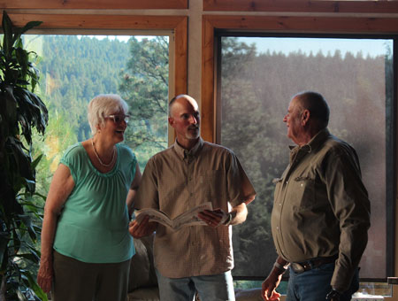
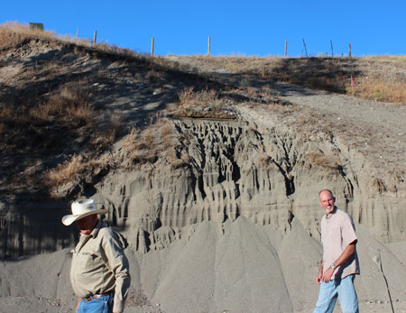
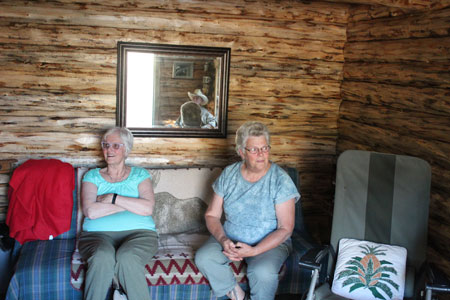
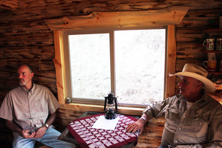
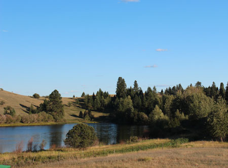
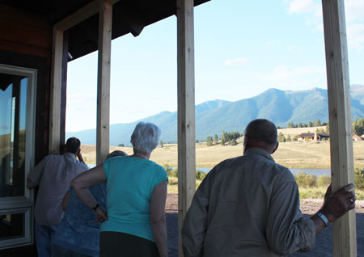

July 18, 2015
| We were blessed by a quick visit from Aunt Ada
one weekend. It had been way too long since we'd seen her, so it was
a treat to catch up. We ran her around to some of the local family
sights, including a very long and relaxed look at our porch.
:-) |
|
 |
 |
| Here we are at the Ponderosa, telling big tales | Now we're checking out the mini HooDoos at Pigeon Bridge |
 |
 |
| The little cabin contains some of Ada's old family antiques that now belong to Rose | Eric and Dan enjoying the lovely river sounds |
 |
 |
| Looking out from our porch toward the end of the lake | Here everyone is looking from our porch toward the other end of the lake. The work of screening in the porch was half-way done at this point. |